1) Decida se cada afirmação a seguir é verdadeira ou falsa e marque com caneta sua resposta no quadro abaixo. Atenção: responda todos os itens, use "N = não sei" caso você não saiba a resposta. Cada resposta certa vale 0.3, cada resposta errada vale -0.2, cada resposta N vale 0. Respostas confusas e ou rasuradas valerão -0.2.
| Itens | V | F | N | |
| 1.a | F | |||
| 1.b | F | |||
| 1.c | V | |||
| 1.d | F | |||
| 1.e | V | |||
| 1.f | F | |||
| 1.g | V | |||
| 1.h | F | |||
| 1.i | F |
1.a) Se
![$A=\left[
\begin{array}{ll}
a & b \\
c & d
\end{array}\right]$](img1.gif) e existem vetores u e w tais que Au=2u e Aw=-w,
então a soma dos autovalores de A6 é igual a 63.
e existem vetores u e w tais que Au=2u e Aw=-w,
então a soma dos autovalores de A6 é igual a 63.
Resposta: Falso. Observe que A2(u)=A(A(u))=A(2u)=2 A(u)=4 u. Repetindo o processo, A6(u)=26 u= 64 u. Analogamente, A6(w)=(-1)6 w= w. Portanto, os autovalores de A6 são 64 e 1, e sua soma é 65.
1.b) A distância entre o plano de equação x+y+z=0 e o plano
de equação x+y+z=1 é igual a 1.
Resposta: Falso. Considere a reta perpendicular a x+y+z=1 que contém ao ponto (0,0,0), ou seja, (t,t,t). Esta reta intersecta x+y+z=1 quando t=1/3. Logo o ponto de interseção é (1/3,1/3,1/3)e este é o ponto do plano x+y+z=1 mais próximo de x+y+z=0. Logo a distância entre os planos é 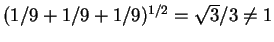.
Outra forma, observe que o ponto (0,0,1)do plano x+y+z=1 está a distância 1 do ponto (0,0,0) do plano x+y+z=0. Logo a distância entre os planos é no máximo 1. E a distância será 1 se, e somente se, o vetor (0,0,1) for normal aos dois planos, o que é falso.
1.c) A reta de equações x=y=z é paralela ao plano
de equação 2x-y-z=3.
Resposta: Verdadeiro. Faça o produto escalar 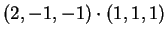 dos vetores normal ao plano e paralelo à reta, que é zero. Observe também que a reta e o plano são disjuntos, o ponto (0,0,0) da reta não pertence ao plano.
1.d) O volume do paralelepípedo formado pelos vetores
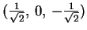,
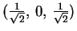
e
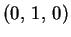é igual a 3.
Resposta: Falso. Os vetores formam uma base ortonormal e seu produto misto é 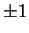. Logo o volume é 1.
1.e)
É possível encontrar dois vetores u e v não nulos
no plano tais que
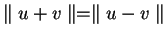.
Resposta:
Verdadeiro.
É suficiente considerar u e v ortogonais:
1.f) Se u, v e w são três vetores de
 perpendiculares entre si, então existem
perpendiculares entre si, então existem  ,
,
 e
e  números reais não nulos tais que
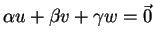.
números reais não nulos tais que
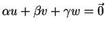.
Resposta:
Falso.
Os vetores são linearmente independentes. Por exemplo,
para ver que  deve ser necessariamente nulo
faça
deve ser necessariamente nulo
faça
1.g) Seja T uma matriz ortogonal. Então se  ,
então
,
então
 .
.
Resposta: Verdadeiro. Observe que T conserva módulos, logo se 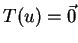 temos 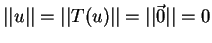, logo 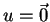.
1.h) Se -1, 1 e 1 (isto é, 1 tem multiplicidade 2)
são os autovalores de uma matriz A  ,
então A representa um espelhamento com relação a um plano.
,
então A representa um espelhamento com relação a um plano.
Resposta:
Falso.
Observe que os autovetores não têm que ser necessariamente ortogonais.
Por exemplo:

1.i) Se R é uma rotação de 90o em
 e se unão pertence ao eixo de rotação, então
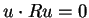,
isto é, u e R(u) são ortogonais.
e se unão pertence ao eixo de rotação, então
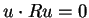,
isto é, u e R(u) são ortogonais.
Resposta:
Falso.
Considere a rotação de  graus e eixo Z
graus e eixo Z
2) Considere as retas r e s definidas pelas equações:


2.a) Determine uma equação paramétrica de r.
2.b) Determine uma equação cartesiana de s, isto é,
escreva s como interseção de dois planos dados em equações
cartesianas.
2.c) Estude a posição relativa de r e s.
2.d) Se a sua resposta no item (2.c) foi reversas ou paralelas
calcule a distância entre r e s, e se foi se intersectam
determine a equação cartesiana do plano que contém as retas r e s.
Resposta:
Para o item (a)
uma forma é resolver os sistema.
Temos, x=y+1 e z=-2y -1.
Escolhendo y como parâmetro temos
Para o item (b) é suficiente encontrar dois planos não
paralelos contendo a s. Os vetores normais destes planos devem
ser ortogonais ao vetor diretor da reta. Ou seja, se (a,b,c)
é o vetor normal do plano então
As retas r e s têm vetores diretores não paralelos.
Logo ou são reversas ou se intersetam.
Considere o ponto
P=(1,0,-1) de r e
Q=(0,1,-1) de s.
Considere o vetor
QP=(1,-1,0) e os vetores diretores
(1,1,-2) de r e (1,1,2) de s.
Para as retas serem reversas
é necessário e suficiente que
A distância entre as retas é
3)
Considere
 .
.
3.a) Estude se  é uma base de
é uma base de
 .
.
3.b) Considere uma transformação linear A de
 em
em
 verificando
verificando
3.c) Determine a matriz de A na base canônica.
3.d) Determine um autovalor e um autovetor (associado ao
autovalor encontrado) de A.
3.e) Encontre uma base onde a matriz de A é da forma

Resposta:
Obviamente  não é uma base: uma base de
não é uma base: uma base de
 tem três vetores (que são l.i.)
(quatro vetores de
tem três vetores (que são l.i.)
(quatro vetores de
 nunca são
l.i.).
nunca são
l.i.).
A transformação A não é ortogonal. Para ser ortogonal deve
conservar módulos. Observe que
Outra forma, mais trabalhosa, e determinar a matriz de A na base canônica e ver que não é ortogonal. Isso será feito no próximo item.
Para determinar A na base canônica devemos determinar
A(1,0,0), A(0,1,0) e A(0,0,1).
Temos
![\begin{displaymath}[A]=
\left(
\begin{array}{ccc}
0 & 1 & 0 \\
1/2 &-1/2 & 1/2\\
1/2 &1/2 & 1/2
\end{array}\right).
\end{displaymath}](img46.gif)
Para o último item considere a base
4)
Considere a matriz
4.a) Determine a, b, c e d para que P represente uma projeção ortogonal em um plano. Determine a equação do plano de projeção.
4.b)
Considere agora a matriz

Determine os autovalores de A.
4.c)
Finalmente
considere a matriz

Resposta: A matriz P deve ser simétrica. Portanto, a=-1/3=b=c. Para determinar d use que a matriz deve ter traço dois, pois se trata de uma projeção em um plano que tem autovalores 1 (de multiplicidade 2) e 0, logo o traço é 1+1+0=2. Logo 2/3+2/3+d=2, d=2/3. De outra forma: d é dado pelo fato do determinante ser zero. De outra forma, d é dado pelo fato do vetor (-1/3,-1/3,d) pertencer ao plano paralelo a (2/3, -1/3,-1/3) e (-1/3,2/3,-1/3).
Para determinar o plano observe que P(i)=(2/3, -1/3,-1/3) e P(j)=(-1/3, 2/3,-1/3) são vetores paralelos ao plano de projeção. Logo o vetor norma é paralelo a 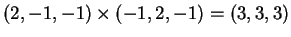. Logo o plano de projeção é x+y+z=0.
Observe que a matriz A é semelhante à matriz
triangular
Para o último item considere a base ortonormal